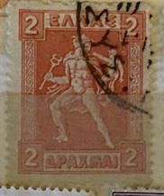
| SOURCE | TITLE| IMAGE MATCH | click to source page |
| www.ebay.com | Greece Postage Stamp Scott 246, Used!! Gr566 | eBay | 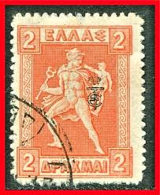 |
| www.ebay.com | Greece 1912-13 "ΕΛΛΗΝΙΚΗ ΔΙΟΙΚΗΣΙΣ" 2d ovpt in Carmine Read ... | 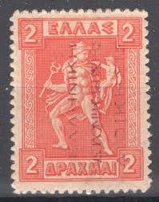 |
| www.amazon.com | Amazon.com: STAMP GREECE HERMES CARRYING INFANT ARCA BLACK ... | 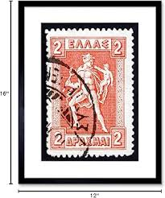 |
| www.hipstamp.com | Greece 1911 Early Issue Fine Used 3Dr. NW-112882 | Europe ... | 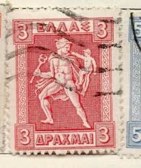 |
| www.ebay.com | Greece Stamp Scott# 227 Hermes Carrying Infant Arcas 1919 ... | 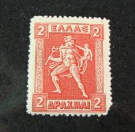 |
| www.mercari.com | 1913 Greece (No.166) Lithograph | Mercari | 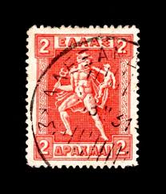 |
| www.dreamstime.com | Hermes Holding His Little Brother Arkas Stock Photos - Free ... | 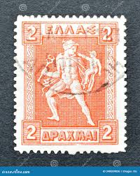 |
| stampforgeries.com | Stamps Forgeries of Northern Epirus / Greek Occupation ... | 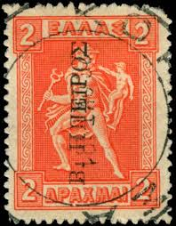 |
| www.istockphoto.com | Greek Postage Stamp Stock Photo - Download Image Now ... | 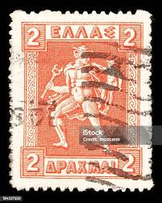 |
| www.facebook.com | Greek stamps with beautiful artwork | 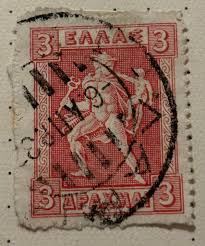 |
| www.alamy.com | Arkas hi-res stock photography and images - Alamy | 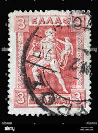 |
| www.stampcommunity.org | Greece Overprinted 1911-23 Errors? - Stamp Community Forum | 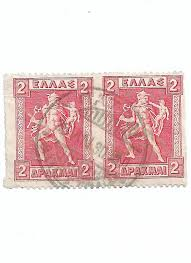 |
| www.dreamstime.com | Stamps Printed in Greece Shows Hermes Editorial Image ... | 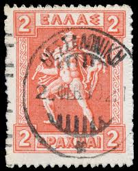 |
| www.ebay.com | Greece old stamp 1919 Lithographic 2dr value with big ... | 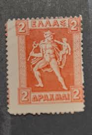 |
| stampencyclopedia.miraheze.org | Thrace - Stamp Encyclopedia | 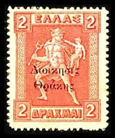 |
| www.shutterstock.com | 3+ Thousand "little Goddess" Royalty-Free Images, Stock ... | 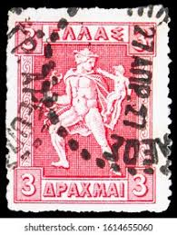 |
| www.linns.com | Cry havoc! Occupation stamps chart wars | 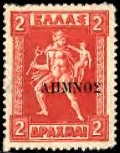 |
| www.postbeeld.com | Stamp 1911, Greece 3dr, Engraved, 20:26.5mm, Stamp out of ... | 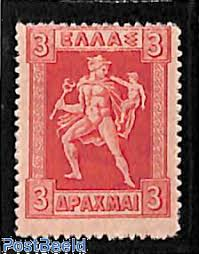 |
| www.buyhungarianstamps.com | N40 Thrace - Greek Stamps of 1911-1919 Overprint (Used ... | 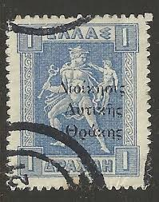 |
| en.todocoleccion.net | grecia °. año 1912 yvert 221 - Buy Antique stamps of Greece ... | 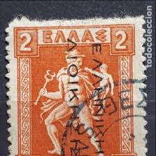 |
| www.arpinphilately.com | Buy Greece #212a - Hermes carrying infant Arcas (1911 ... | 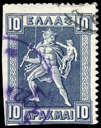 |
| esam.ir | تمبر قدیمی یونان دهه 20 | 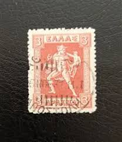 |
| www.kitantik.com | Yunanistan Pulu - Greek Stamp - Postadan Geçmiş Pul Filateli ... | 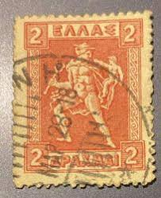 |
| krsk.au.ru | №3900) марка "Гермес" (2 драхмы) (1911) (Греция) — купить в ... | 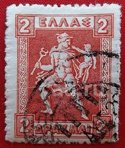 |
| www.amazon.com | Sello Grecia Hermes Llevando a infante Arca ... - Amazon.com | 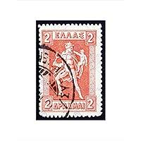 |
| www.auksjonarius.no | Auksjonarius.no - samleobjekter på auksjon - GREKLAND 1919 ... | 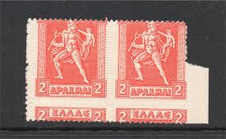 |
| www.hellenicaworld.com | Arcas | 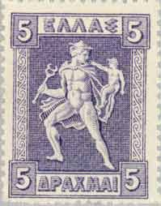 |
| www.alamy.com | English: Greece: Definitive postage stamp of 1911 Gravure ... | 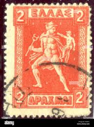 |
| www.ricardo.ch | Greek Briefmarke (Gebraucht) in Chiasso für CHF 1 – mit ... | 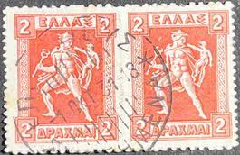 |
| www.ebay.com | Greece Stamp MNH Year 1913 - 1927 Lithographic Issue RRR ... | 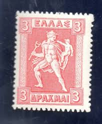 |
| www.armycom.cz | ZNÁMKY ŘECKO 20-30-tá LÉTA | 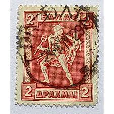 |
| el.wikipedia.org | Αρχείο:Grèce - Serie courante de 1911- "Hermès" Type c.jpg ... | 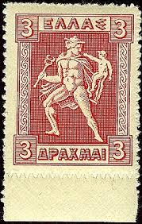 |
| www.tandfonline.com | Full article: Olympic Philately: Reading the 1896 Athens ... | 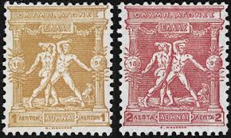 |
| www.lastdodo.fr | Perfins de Grèce Catalogue de timbre perforés - LastDodo | 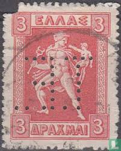 |
| www.todocoleccion.net | grecia 1911, mitologia, grabado - Compra venta en todocoleccion | 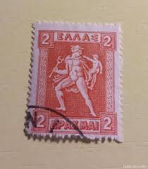 |
| aukro.cz | Řecko -přetisk - velmi levně !!! | Aukro | 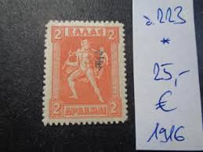 |
| www.stampcollectingblog.com | Hermes and Iris definitive postage stamp series of Greece | 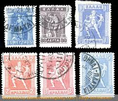 |
| faitatzis.gr | ΓΡΑΜΜΑΤΟΣΗΜΑ - ΦΙΛΟΤΕΛΙΚΑ - Άμεση Διάθεση | 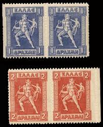 |
| www.alamy.com | Collect cars hi-res stock photography and images - Page 20 ... | 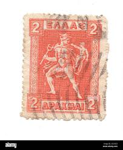 |
| www.delcampe.net | Greece - GREECE # STAMPS FROM 1911-21 STAMPWORLD 149 TK 13 1/2 | 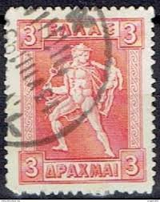 |
| www.lastdodo.nl | Etniki Trapeza perfins catalogus - LastDodo | 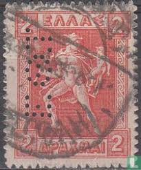 |
| www.istockphoto.com | Partenon On Greek Vintage Postage Stamp Stock Photo ... | 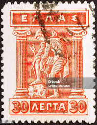 |
| esam.ir | تمبر ارور یونان بدون دندانه وسط | 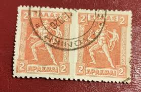 |
| www.efo.gr | The ancient Greek god Hermes and his illustration on Greek ... | 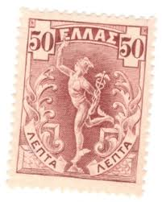 |
| www.maxstern.com.au | Greece 1916 "ET" Monogram Overprinted Set/17 Stamps MLH ... | 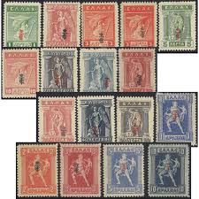 |
| www.reddit.com | 1914 Northern Epirote Stamps, Tiny Pieces of a Failed ... | 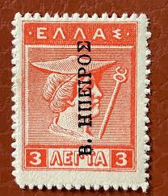 |
| www.linns.com | Crete stamps offer wide range of collecting opportunities ... | 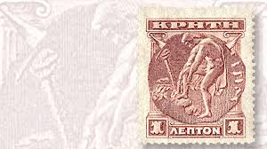 |
| ajuntament.barcelona.cat | The messenger gods: Iris and Hermes - Col·leccio Marull | 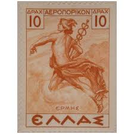 |
| www.hipstamp.com | Search "postage" in Europe > Greece / HipStamp | 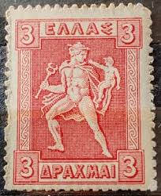 |
| www.shutterstock.com | GRECIA - ALREDEDOR DE 1911: Sello Foto de stock 2529222349 ... | |
| www.myoldarndtlilley.com | greece world war one stamps - holbrook | |
| www.mysticstamp.com | 379 - 1933 Greece - Mystic Stamp Company | |
| www.namuseum.gr | Art exhibition "Finds" by Kiki Voulgareli at the Museum Cafe ... | |
| lighthousestampsociety.org | Stamps – Greece | Lighthouse Stamp Society | |
| za.pinterest.com | Discover 27 Greece - rare & valuable stamps and greece ideas ... | |
| commons.wikimedia.org | File:Stamp Thrace Greek occ 1920 2l ovpt.jpg - Wikimedia Commons | |
| en.wikipedia.org | Postage stamps and postal history of Greece - Wikipedia | |
| www.freestampcatalogue.com | Stamps from Greece - Freestampcatalogue.com - The free ... | |
| www.ebay.com | STAMPS GREECE YVERT N°198G MH* (F134737) | eBay |
{kind=link}